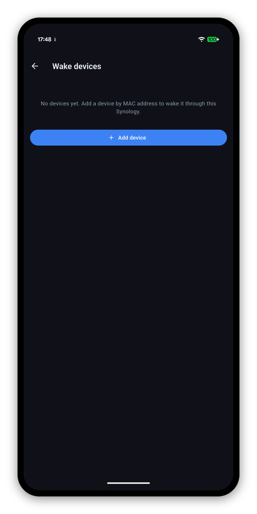

A Wake button next to Connect in the device list for the NAS itself, and a Wake devices screen for everything else on your network. One of those works from anywhere; the other has an honest caveat.

Wake-on-LAN is a broadcast on a local network. Everything about what does and does not work follows from that one fact, so here it is plainly rather than buried in a footnote.
| What you want to wake | Where you are | Works? | Why |
|---|---|---|---|
| The NAS | On the same network | Yes | Your phone broadcasts the packet directly. Nothing to set up. |
| Another device | On the same network | Yes | Same - either your phone or the NAS can send it. |
| Another device, NAS is on | Anywhere | Yes | The NAS relays it for you. You reach the NAS over your normal connection and it broadcasts on the LAN. This is the DS Router path. |
| The NAS itself, while it is off | Outside your network | Needs setup | A powered-off NAS cannot relay its own wake, and QuickConnect cannot reach a NAS that is off. You need a VPN into the network, or a router forwarding UDP port 9 to the LAN broadcast address. |
Settings › Wake devices. Add any machine on your network by name and MAC address, and the NAS sends the magic packet for you from inside the network.
If a packet is sent and nothing happens, it is almost always one of these - none of which the app can see or fix from outside.
Your NAS on the home screen, with an honest timestamp.